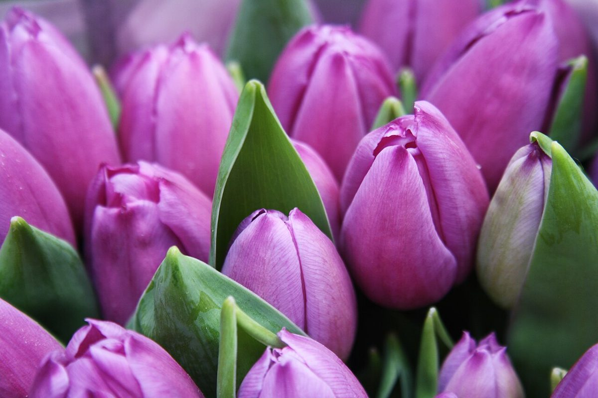
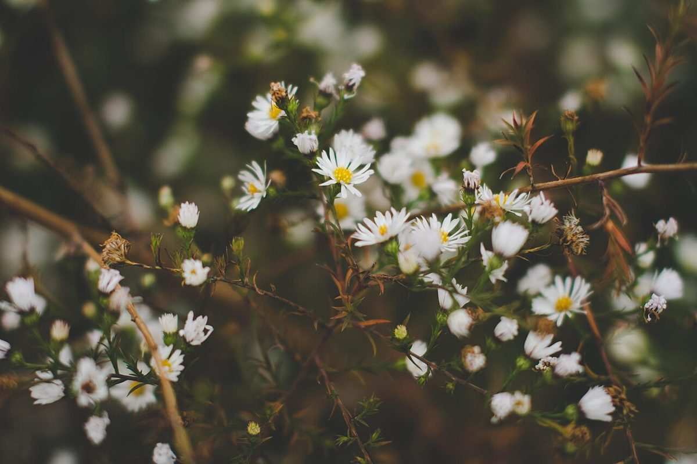
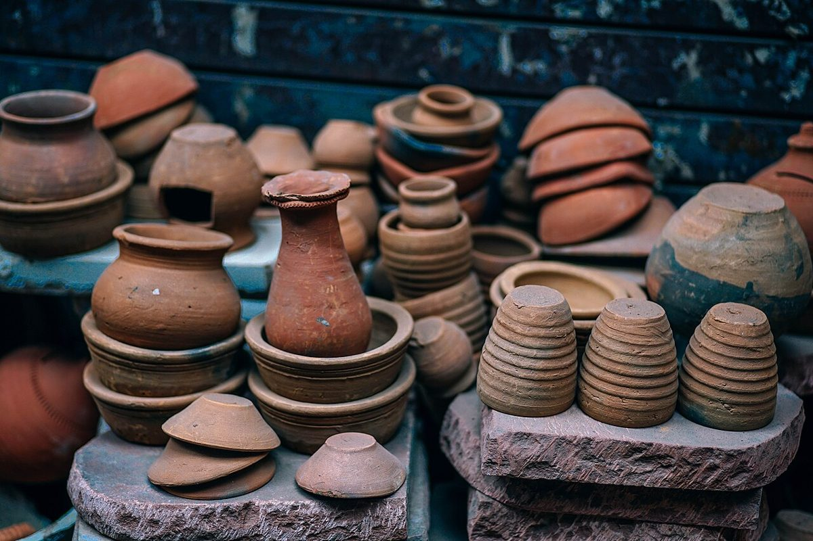
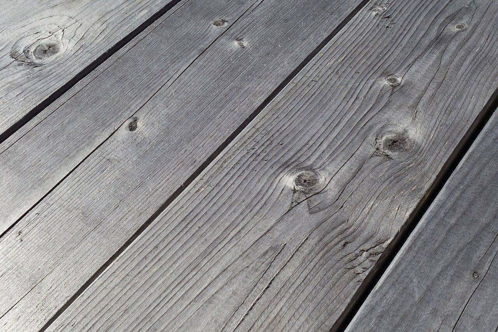

店のこと
レモン絞り器の部位の配置図
お店の詳しい情報は準備中です。ここでは、制作側が考えたデザインの考え方を紹介します。


制作側の連想
番号は、部位の番号
ホームの図にある1〜6の番号は、それぞれレモン絞り器の部位の名前に対応します。レモン絞り器(半分に切った果実を押しつけて汁をしぼる、二本腕のレバー式の道具)の部位を図にしたもので、制作側の連想です。お店の理念・由来とは無関係で、実際の製品の仕様を示すものでもありません。
1上アームの握り
上側の持ち手。ここを握りこむと、先のドームが下へ動く。
2押し型(ドーム)
上アームの先にぶら下がる半球の型。カップの中へ向かって下りていく。
3ヒンジ(軸)
二本のアームをつなぐ回転軸。ここを支点に開いたり閉じたりする。
4穴あきの絞りカップ
半分に切った果実をのせる丸いくぼみで、底に小さな穴がいくつも並ぶ。
5注ぎ口
カップのふちにある、くちばし形の切り込み。しぼった汁の出口になる。
6下アームの握り
下側の持ち手。カップを支える側のアームにつながっている。
写真(イメージ)
写真(イメージ)




写真はイメージです。お店のものではありません。
確認できていること
お店の情報
| 屋号 | FRAJALICA cafe and sweets by KAEN |
|---|---|
| 所在地 | 〒329-2721 栃木県那須塩原市東町２−４ |
| SNS | Instagram @frajalica_kaen |
| そのほか | 準備中 |